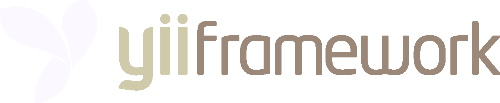

PHP5 framework best for developing Web 2 Applications
MVC
OOP
DRY
BSD
Historic
Progress
1.0, December 3, 2008
1.1.0, January 10, 2010
2.0 Alpha verions, ~March 2012
Development team
7 members
~50 Translator (+15 languages)
Another PHP framework...
Prado
Ruby on Rails
Symfony
Joomla
Java, C#
Everybody
❤
features!!!
DAO, AR, DB Migration
jQuery integration
RBAC
I18N, L10N
Cache
Error, Log
Security
PHPUnit & Selenium
Code generation
Bootstrap
http://example.com/
index.php
?r=
post
/
show
&id=1
(http://www.example.com
/yii-rocks
)
index
.php
app
<
request
urlmanager
controller
filters
action
model
view
widget
layout
You will not be alone
Resources
Forum
Freenode #yii
Wiki
Podcast
Quotes and stories
"Community is not a help desk"
"From svn to github"
"There not so may examples"
"Mass assigment hack on github"
←
→
/
Go to slide:
#